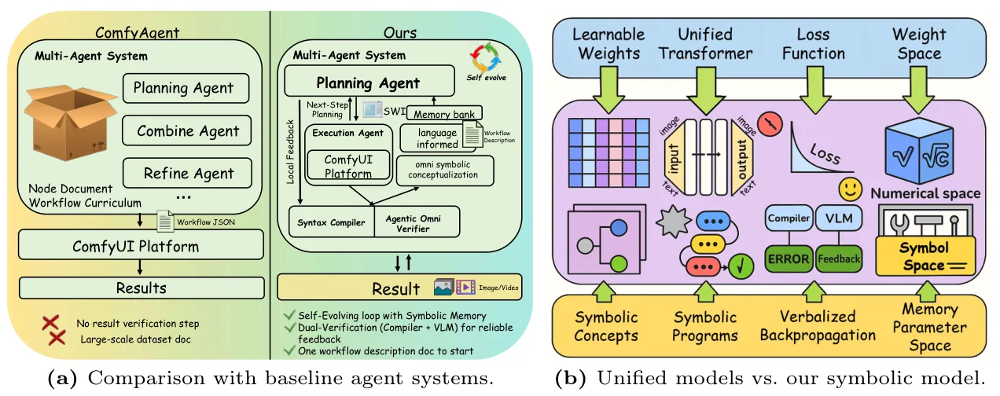
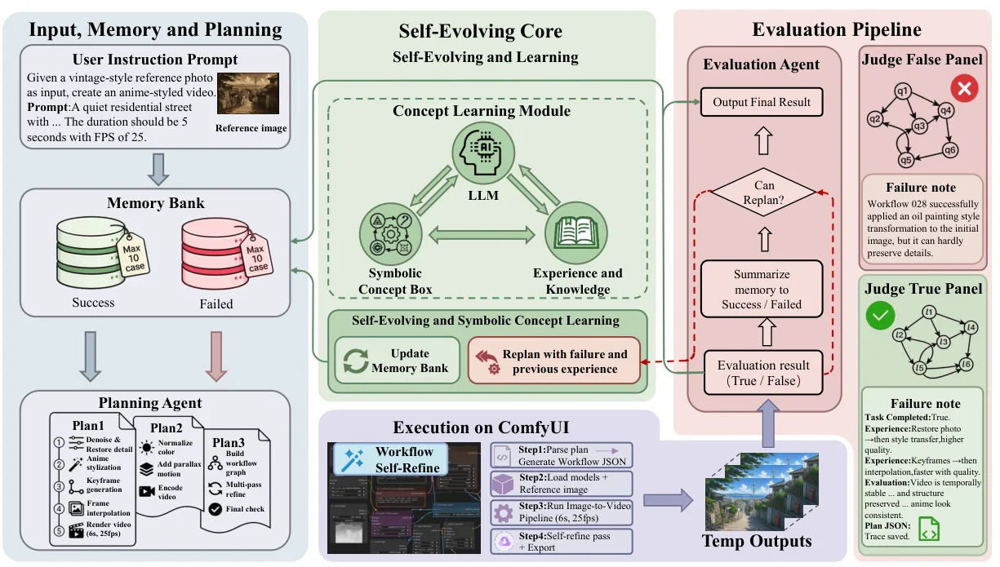

SymbOmni：通过符号概念学习持续演化的 Agentic Omni ModelSymbOmni: Evolving Agentic Omni Models via Symbolic Concept Learning
主要面向生成式多模态 agent，与定位重建关联较弱；其可复用工作流记忆可能对自动化实验和重建管线编排有间接启发。
一句话工作总结
把视觉创作经验归纳成可复用符号工作流，再以语言反馈持续更新并组合解决新任务。
摘要
SymbOmni 试图解决多模态生成系统无法从经验持续积累可复用知识的 perpetual novice 问题。其 Symbolic Concept Box 将低层操作抽象成可组合的 Symbolic Workflow Instructions，并通过 induction-transduction 循环从经历归纳概念、再组合概念解决新任务。训练采用语言反馈驱动的 verbalized backpropagation，无需梯度微调。作者报告该系统在迭代视觉创作中提升图像质量和任务成功率、减少超过 40% token，并在在线持续学习 benchmark 上获得累积增益。
Visual generation is increasingly ubiquitous in diverse domains, from text-to-image/video synthesis to multimodal interactive creation. Yet prevailing monolithic models remain fundamentally constrained by their inability to learn cumulatively and evolve autonomously, which is a limitation we term the "perpetual novice" problem. They lack mechanisms for structuring experience into reusable knowledge and therefore rely on brittle, "from-scratch" reasoning for each task, resulting in poor compositional generalization and inefficient knowledge retention. Motivated by these limitations, we propose SymbOmni, an agentic omni-model designed for cumulative evolution through Symbolic Concept Learning. At its core is the Symbolic Concept Box, an optimizable memory module that abstracts low-level operations into reusable Symbolic Workflow Instructions. SymbOmni operates through an induction-transduction cycle: experiences are abstracted into symbolic concepts (induction), which are then adaptively composed to solve novel tasks (transduction). The training is done by verbalized backpropagation with language-based feedback to enable continuous self-improvement without gradient-based model fine-tuning. Comprehensive experiments validate that (I) SymbOmni significantly outperforms existing agent-based systems for iterative creation and also surpasses closed-source models (e.g., Nano Banana, GPT-Image-1) in both image quality and task success rates; (II) SymbOmni effectively reduces token consumption by over 40% while maintaining competitive generation quality; and (III) SymbOmni enables effective continual learning by achieving cumulative gains across multiple online-learning benchmarks and setting a new state of the art.
中文解读摘录
图表/页面预览

{kind=link}

{kind=link}
